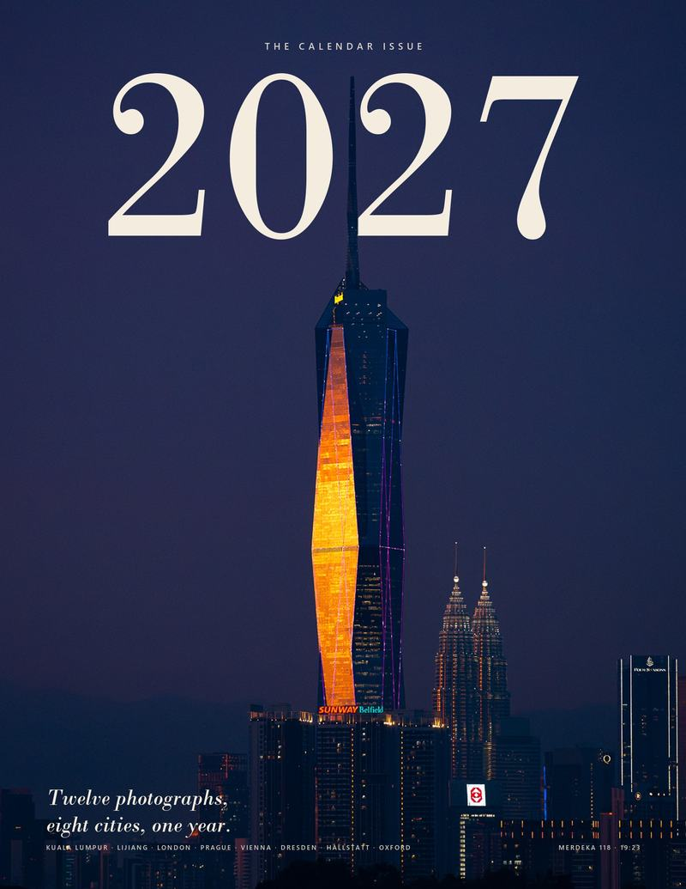

The cover · 2027
Behind the tower
Merdeka 118, Kuala Lumpur · 19:23
The year opens at blue hour. Merdeka 118 climbs out of the dusk with its facade lit amber, and the Petronas Towers stand small beside it.
The big serif 2027 sits behind the spire, so the tower cuts straight through the title instead of sitting under it. That is the same move a fashion magazine uses on its masthead. The rest is kept quiet: a small masthead above, a short italic line below.
Of the five covers in the picker, this is the one I'd choose. It is the only cover whose photograph makes a real first impression on its own, and it is also the only one where the title is fully legible while the photo still interacts with it.
- 12photographs
- 8cities
- 1year
Kuala Lumpur · Lijiang · London · Prague · Vienna · Dresden · Hallstatt · Oxford